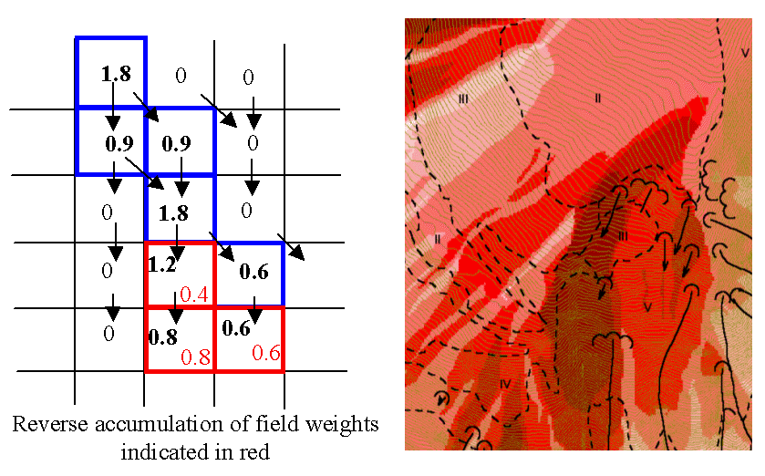

D-Infinity Reverse Accumulation
(c) 2010 by David G. Tarboton
This works in a similar way to evaluation of
weighted Contributing area, except that the accumulation is by propagating
the weight loadings upslope along the reverse of the flow directions to
accumulate the quantity of weight loading downslope from each grid cell.
The function also reports the maximum value of the weight loading downslope
from each grid cell in the Maximum Downslope grid.

This function is designed to evaluate and map the
hazard due to activities that may have an effect downslope. The example is
land management activities that increase runoff. Runoff is sometimes a
trigger for landslides or debris flows, so the weight grid here could be
taken as a terrain stability map. Then the reverse accumulation provides
a measure of the amount of unstable terrain downslope from each grid cell,
as an indicator of the danger of activities that may increase runoff, even
though there may be no potential for any local impact.
Parameters
- Number of Processes
Integer
- The number of stripes that the domain will be divided into and the
number of MPI parallel processes that will be spawned to evaluate each
of the stripes.
- D-Infinity Flow Direction Grid
Raster Grid
- A grid giving flow direction by the D-infinity method. Flow direction
is measured in radians, counter clockwise from east. This can be created
by the tool "D-Infinity Flow Directions".
- Weight Grid
Raster Grid
- A grid giving weights (loadings) to be used in the accumulation.
Outputs
- Reverse Accumulation Grid
Raster Grid
- The grid giving the result of the "Reverse Accumulation"
function. This works in a similar way to evaluation of weighted Contributing
area, except that the accumulation is by propagating the weight loadings
upslope along the reverse of the flow directions to accumulate the quantity
of loading downslope from each grid cell.
- Maximum Downslope Grid
Raster Grid
- The grid giving the maximum of the weight loading grid downslope
from each grid cell.